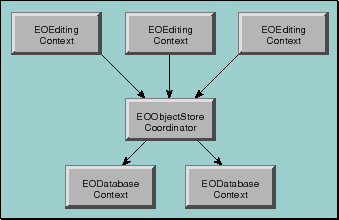

Inherits From:
EOObjectStore : NSObject
Package:
com.apple.yellow.eocontrol (Yellow Box)
EOCooperatingObjectStore is a part of the control layer's object storage abstraction. It is an abstract class that defines the basic API for object stores that work together to manage data from several distinct data repositories. It is for use in WebObjects and Yellow Box applications only; there is no equivalent class for Java Client applications. For more general information on the object storage abstraction, see "Object Storage Abstraction" in the introduction to the EOControl Framework.
The interaction between EOCooperatingObjectStores is managed by another class, EOObjectStoreCoordinator. The EOObjectStoreCoordinator communicates changes to its EOCooperatingObjectStores by passing them an EOEditingContext. Each cooperating store examines the modified objects in the editing context and determines if it's responsible for handling the changes. When a cooperating store has changes that need to be handled by another store, it communicates the changes to the other store back through the coordinator.
For relational databases, Enterprise Objects Framework provides a concrete subclass of EOCooperatingObjectStore, EODatabaseContext (EOAccess). A database context represents a single connection to a database server, fetching and saving objects on behalf of one or more editing contexts. However, a database context and an editing context don't interact with each other directly-a coordinator acts as a mediator between them.

commitChanges
public abstract void commitChanges ()
Overridden by subclasses to commit the transaction. Throws an exception if an error occurs; the error message indicates the nature of the problem.
See also: - performChanges , - commitChanges , - saveChangesInEditingContext (EOObjectStoreCoordinator)
handlesFetchSpecification
public abstract boolean handlesFetchSpecification (EOFetchSpecification fetchSpecification)
Overridden by subclasses to return true if the receiver is responsible for fetching the objects described by fetchSpecification. For example, EODatabaseContext (EOAccess) determines whether it's responsible based on fetchSpecification's entity name.
See also: - ownsGlobalID , - ownsObject
ownsGlobalID
public abstract boolean ownsGlobalID (EOGlobalID globalID)
Overridden by subclasses to return true if the receiver is responsible for fetching and saving the object identified by globalID. For example, EODatabaseContext (EOAccess) determines whether it's responsible based on the entity associated with globalID.
See also: - handlesFetchSpecification , - ownsObject
ownsObject
public abstract boolean ownsObject (java.lang.Object object)
Overridden by subclasses to return true if the receiver is responsible for fetching and saving object. For example, EODatabaseContext (EOAccess) determines whether it's responsible based on the entity associated with object.
See also: - ownsGlobalID , - handlesFetchSpecification
performChanges
public abstract void performChanges ()
()
Overridden by subclasses to transmit changes to the receiver's underlying database. Raises an exception if an error occurs; the error message indicates the nature of the problem.
See also: - commitChanges , - rollbackChanges , - saveChangesInEditingContext (EOObjectStoreCoordinator)
prepareForSaveWithCoordinator
public abstract void prepareForSaveWithCoordinator (
EOObjectStoreCoordinator coordinator,
EOEditingContext anEditingContext)
Overridden by subclasses to notify the receiver that a multi-store save operation overseen by coordinator is beginning for anEditingContext. For example, the receiver might prepare primary keys for newly inserted objects so that they can be handed out to other EOCooperatingObjectStores upon request. The receiver should be prepared to receive the messages recordChangesInEditingContext and recordUpdateForObject .
After performing these methods, the receiver should be prepared to receive the possible messages performChanges and then commitChanges or rollbackChanges .
recordChangesInEditingContext
public abstract void recordChangesInEditingContext ()
()
Overridden by subclasses to instruct the receiver to examine the changed objects in the receiver's EOEditingContext, record any operations that need to be performed, and notify the receiver's EOObjectStoreCoordinator of any changes that need to be forwarded to other EOCooperatingObjectStores.
See also: - prepareForSaveWithCoordinator , - recordUpdateForObject
recordUpdateForObject
public abstract void recordUpdateForObject (
java.lang.Object object,
NSDictionary changes)
Overridden by subclasses to communicate from one EOCooperatingObjectStore to another (through the EOObjectStoreCoordinator) that changes need to be made to an object. For example, an insert of an object in a relationship property might require changing a foreign key property in an object owned by another EOCooperatingObjectStore. This method is primarily used to manipulate relationships.
See also: - prepareForSaveWithCoordinator , - recordChangesInEditingContext
rollbackChanges
public abstract void rollbackChanges ()
()
Overridden by subclasses to roll back changes to the underlying database. Raises one of several possible exceptions if an error occurs; the error message should indicate the nature of the problem.
See also: - commitChanges , - performChanges , - saveChangesInEditingContext (EOObjectStoreCoordinator)
valuesForKeys
public abstract NSDictionary valuesForKeys (
NSArray keys,
java.lang.Object object)
Overridden by subclasses to return values (as identified by keys) held by the receiver that augment properties in object. For instance, an EODatabaseContext (EOAccess) stores foreign keys for the objects it owns (and primary keys for new objects). These foreign and primary keys may well not be defined as properties of the object. Other database contexts can find out these keys by sending the database context that owns the object a valuesForKeys message. Note that you use this for properties that are not stored in the object, so using key-value coding directly on the object won't always work.